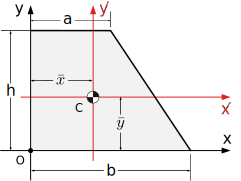

Section 7.4 Centroids
Key Questions
What is the difference between a centroid, center of gravity and a center of mass?
When will the centroid, center of gravity and center of mass refer to the same point
Why do the equations for the center of gravity, mass, volume, and area all have the same structure?
A centroid is a weighted average like the center of gravity, but weighted with a geometric property like area or volume, and not a physical property like weight or mass. This means that centroids are properties of pure shapes, not physical objects. They represent the coordinates of the “middle” of the shape.
The defining equations for centroids are similar to the equations forCenters of Gravity (7.2.2) but with volume used as the weighting factor for three-dimensional shapes
and area for two-dimensional shapes
We will see how to use these equations on complex shapes later in this chapter, but centroids of some simple shapes can be easily found using symmetry.
If the shape has an axis of symmetry, every point on one side of the axis is mirrored by another point equidistant on the other side. One has a positive distance from the axis, and the other is the same distance away in the negative direction. These two points will add to zero the numerator, as will every other point making up the shape, and the first moment will be zero. This means that the centroid must lie along the line of symmetry if there is one. If a shape has multiple symmetry lines, then the centroid must exist at their intersection.
Since rectangles, circles, cubes, spheres, etc. have multiple lines of symmetry, their centroids must be exactly in the center as we would expect.
Question 7.4.2.
What are the coordinates of the centroid of the I beam section shown?
The cross section is symmetrical about both a vertical and horizontal centerline. The centroid is at the intersection, in the middle. The coordinates are measured from the origin, in the bottom left of the diagram.
Subsection 7.4.1 Properties of Common Shapes
We will learn how to find centroids of other shapes in Section 7.7 using integration, but in the mean time several common shapes are recorded in the table below. This information in this table will be needed in the next section.
Shape |
Area |
\(\bar{x}\) |
\(\bar{y}\) |
|---|---|---|---|
 |
\(A = b h\) | \(b/2\) |
\(h/2\) |
 |
\(\dfrac{bh}{2}\) | \(b/3\) |
\(h/3\) |
 |
\(\dfrac{(a+b) h}{2}\) | \(\dfrac{a^2 +ab + b^2}{3 (a+b)}\) |
\(\dfrac{h(2a+b)}{3(a+b)}\) |
 |
\(\pi r^2\) | \(r\) |
\(r \) |
 |
\(\dfrac{\pi r^2}{2}\) |
\(r\) |
\(\dfrac{4 r}{3 \pi}\) 1 |
 |
\(\dfrac{\pi r^2}{4}\) | \(\dfrac{4 r}{3 \pi}\) | \(\dfrac{4 r}{3 \pi}\) |
Note 7.4.4.
In this table, all centroids are measured from the indicated origin. You must make the appropriate adjustments when the origin of your coordinate system is located elsewhere.
Subsection 7.4.2 Relations between Centroids and Center of gravity
The equations we have been discussing (7.2.2), (7.3.1),(7.4.1) and (7.4.2) are all variations on the general weighted average formula (7.1.2).
Here \(a_i\) represents the distance in one of the coordinate directions such as \(x\text{,}\) \(\bar{a}\) is the mean distance in the \(a\) direction to the ‘middle’ of the whole object, and \(w\) is the weighting factor. The only difference between them is the choice of weighting factor. For center of gravity, the weighting factor is the weight, for center of mass, it is the mass, for three dimensional centroids it is the volume, and for two dimensional centroids it is area.
To understand how these equations relate to one another consider a plate with a cross-sectional area \(A\text{,}\) divided into \(n\) pieces with volume \(V_i\text{.}\)
The weight of part \(i\) is the product of its specific weight and volume.
In the most general case, all of these terms might depend on the position of the part, but if any are constant they can be factored out and simplify the formulas.
For a homogeneous flat plate with uniform thickness, like a piece of plywood, the density, thickness and \(g\) are all constant so
The two dimensional centroid equations are sufficient to find the center of gravity of a three dimensional object.